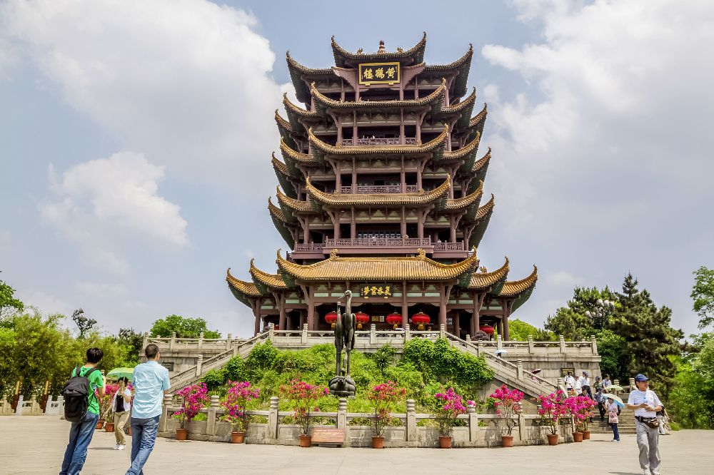

YellowCrane Tower
- 
-
黄鹤楼
黄鹤楼，位于湖北省武汉市武昌区，地处蛇山之巅，濒临万里长江，为武汉市地标建筑；始建于三国吴黄武二年（223年）， 历代屡加重修，现存建筑以清代“同治楼”为原型设计，重建于1985年；因唐代诗人崔颢登楼所题《黄鹤楼》一诗而名扬四海。
收藏 -
历史渊源
关于黄鹤楼的得名，有“因山”、“因仙”两种说法。
因仙说: 因仙说分两种。一说是曾有仙人驾鹤经此，遂此得名。
一说是曾有道士在此地辛氏酒楼的墙上画了一只会跳舞的黄鹤， 店家生意因此大为兴隆；十年后道士重来，用笛声招下黄鹤，乘鹤飞去，辛氏遂出资建楼，称黄鹤楼。
因山说: 历代考证认为，黄鹤楼的名字是因为它建在黄鹄山上而取的；古代的“鹄” 与“鹤”二字一音之转，互为通用，故名为“黄鹤楼”。